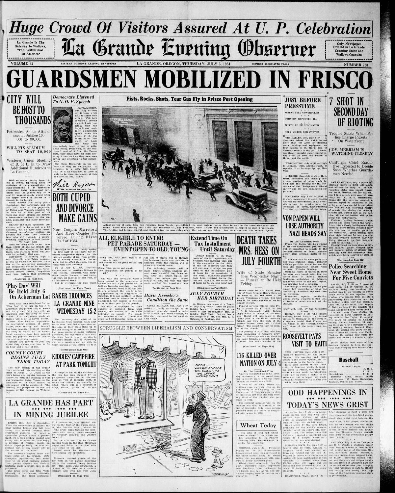

HN HN-487 · July 5, 1934 · Economy, Labor & Industry > Labor Unions, Strikes & Workplace Conflict > Strikes
Source: Decatur Daily Democrat, p. 1 — original page; National Archives labor-history exhibit.
Report: Under “Bloody Riots on West Coast,†the paper described maritime strikers, police, and private forces confronting one another in San Francisco, with five reported shot and wounded while the confrontation was unfolding.
Assessment: Historical records identify July 5 as “Bloody Thursday,†when police gunfire killed two strikers; the violence helped trigger a major general strike. The afternoon dispatch's five wounded was not a final casualty count. The headline's “riot†framing does not independently assign responsibility for the deaths.
Authentic scans retrieved from Historic Oregon Newspapers (University of Oregon). Article crops are located using the archive's own OCR word coordinates and rendered at native crop resolution; page scans are reduced-size access renditions. No images were generated, mocked, or retouched.

Not yet acquired. Queued for provider-specific acquisition testing (see source-acquisition manifest).
URL (preserved verbatim): https://newspapers.library.in.gov/?a=d&d=DCDD19340705.1.1
Saved research report: Historical_Newspaper_Event_Research_478-502_2026-10-23.md
Evidence note: A newspaper report means a historical publication made a claim; it does not establish that claim as fact. Contemporary reporting is separated from later scholarly context and our own assessment.